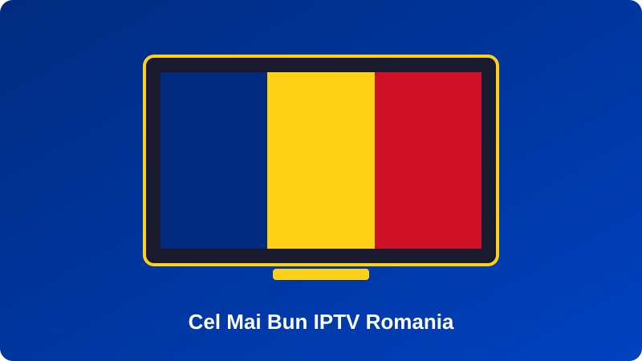
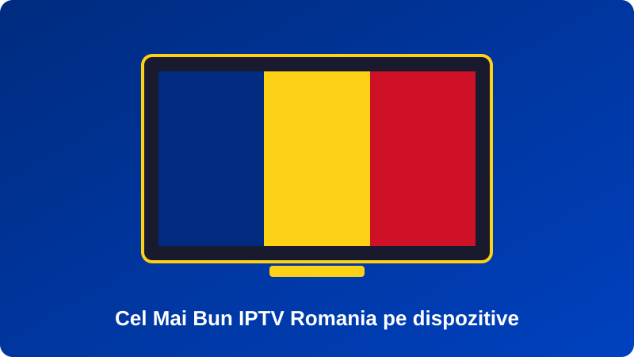

Daca ai ajuns aici, probabil cauti cel mai bun iptv romania si vrei un raspuns clar, nu o lista de promisiuni. Cand locuiesti departe de tara, televiziunea romaneasca devine o legatura reala cu acasa: jurnalul de seara, serialul preferat, un meci important sau emisiunea de weekend. Problema este ca oferta de pe piata este uriasa si, la prima vedere, toate serviciile par la fel.
In practica, diferentele apar abia seara, cand reteaua este aglomerata. Un serviciu ieftin poate merge perfect la pranz si se blocheaza exact la ora jurnalului. Altul are mii de canale, dar nu include posturile pe care le urmaresti. De aceea, alegerea pentru cel mai bun iptv romania trebuie facuta dupa criterii concrete: stabilitate, canale romanesti, ghid de programe, suport si compatibilitate cu aparatele tale.
In acest ghid explicam cum compari serviciile, cum testezi gratuit, ce aparate folosesti si ce greseli sa eviti. Echipa Romania IPTV lucreaza zilnic cu familii din Romania si din diaspora, asa ca recomandarile vin din situatii reale. Daca esti la inceput, citeste si ghidul despre iptv romania, apoi revino la criteriile de mai jos.

Cuprins
- Ce inseamna, de fapt, cel mai bun IPTV Romania
- Criterii pentru a alege cel mai bun IPTV Romania
- Canalele romanesti pe care ar trebui sa le gasesti
- Cum testezi un serviciu IPTV in 5 pasi
- Cel mai bun IPTV Romania pentru romanii din diaspora
- Aplicatii si dispozitive recomandate
- Greseli frecvente cand cauti cel mai bun IPTV Romania
- De ce aleg romanii Romania IPTV
- Intrebari frecvente
Ce inseamna, de fapt, cel mai bun IPTV Romania
Expresia cel mai bun iptv romania nu descrie un singur produs, ci un set de calitati pe care le cauti atunci cand vrei televiziune romaneasca prin internet. Un serviciu bun nu se masoara dupa numarul de canale din reclama, ci dupa cat de bine merge in fiecare seara, pe aparatul tau, in casa ta. Pentru un roman plecat in Germania, Italia sau Spania, cel mai bun serviciu este cel care ii aduce acasa jurnalul, serialul si emisiunile fara intreruperi.
IPTV explicat pe scurt
IPTV inseamna televiziune prin protocol internet. In loc de antena sau cablu, imaginea ajunge printr-o conexiune la internet, intr-o aplicatie instalata pe televizor, telefon sau Android TV Box. Daca vrei explicatia completa, citeste ghidul iptv romania, unde gasesti toate notiunile de baza.
De ce difera atat de mult serviciile
Doua servicii cu acelasi numar de canale pot oferi experiente complet diferite. Diferenta o fac serverele, latimea de banda, calitatea fluxurilor si echipa de suport. De aceea, cand cauti cel mai bun iptv romania, merita sa testezi inainte sa platesti.
Criterii pentru a alege cel mai bun IPTV Romania
Ca sa nu alegi dupa pret sau dupa promisiuni, foloseste aceeasi lista de criterii pentru fiecare furnizor pe care il compari. Mai jos sunt cele mai importante, in ordinea in care conteaza in viata de zi cu zi.
Stabilitatea in orele de varf
Seara, intre 19:00 si 23:00, sute de mii de oameni se uita la televizor in acelasi timp. Aici se vede diferenta dintre un serviciu serios si unul improvizat. Testeaza intotdeauna in aceasta fereastra, nu la pranz.
Canalele romanesti care conteaza
Verifica daca ai posturile urmarite de familia ta: stiri, filme, sport, copii si muzica. Un catalog de zeci de mii de canale straine nu inlocuieste doua posturi romanesti lipsa.
Ghidul de programe (EPG)
Ghidul de programe te scuteste de cautari inutile si iti arata ce ruleaza acum si ce urmeaza. Un serviciu fara EPG corect este mult mai greu de folosit, mai ales de catre parinti sau bunici.
Suportul in limba romana
Cand ceva nu merge, vrei sa scrii in romana si sa primesti raspuns rapid. Un suport pe WhatsApp este, in general, cea mai comoda varianta.
Daca un furnizor nu poate raspunde clar la aceste patru puncte, mergi mai departe. Un serviciu serios isi explica singur limitele: spune cate conexiuni primesti, ce aparate sunt compatibile si cum se face reinnoirea, fara termeni vagi sau promisiuni pe care nu le poti verifica.
| Criteriu | Ce cauti | Semnal de alarma |
|---|---|---|
| Stabilitate | Imagine fluida seara | Blocaje la jurnal |
| Canale | Posturi romanesti complete | Doar liste straine |
| Suport | Raspuns in romana | Fara contact real |
| Test | Test gratuit fara card | Plata obligatorie imediat |
Canalele romanesti pe care ar trebui sa le gasesti
Un serviciu care pretinde ca este cel mai bun iptv romania trebuie sa acopere categoriile esentiale de continut. Ca sa vezi lista detaliata, citeste articolele despre canale romanesti iptv si despre canale tv romanesti iptv.
Stiri si actualitate
Posturile de stiri sunt prioritatea numarul unu pentru diaspora. Jurnalele de seara si editiile speciale trebuie sa ruleze live, fara intarziere mare fata de emisia originala.
Filme, seriale si divertisment
Telenovelele, serialele si emisiunile de weekend aduc familia in fata televizorului. Verifica daca posturile generaliste sunt disponibile in HD si daca imaginea ramane clara.
Sport, copii si muzica
Meciurile, desenele animate si canalele de muzica completeaza oferta. Pentru familii cu copii, canalele pentru cei mici sunt un criteriu la fel de important ca stirile.
Cum testezi un serviciu IPTV in 5 pasi
Cea mai sigura metoda de a gasi cel mai bun iptv romania pentru casa ta este un test practic, facut cu aceeasi retea si aceleasi aparate pe care le vei folosi zilnic.
- Cere un test gratuit si primeste datele de acces.
- Instaleaza aplicatia pe televizorul sau box-ul tau.
- Urmareste cateva canale in orele de varf, seara.
- Verifica ghidul de programe si schimbarea rapida a canalelor.
- Scrie suportului o intrebare si noteaza cat dureaza raspunsul.
Ce sa notezi in timpul testului
Noteaza daca imaginea se opreste, daca sunetul ramane sincronizat si daca aplicatia raspunde repede. Doua-trei seri de test iti arata mai mult decat zece recenzii.
Cat dureaza un test relevant
Ideal este sa incluzi o seara de weekend, cand reteaua este cea mai aglomerata. Daca serviciul trece si de acest moment, ai o baza solida pentru decizie.
Cel mai bun IPTV Romania pentru romanii din diaspora
Romanii din strainatate au nevoi specifice: diferente de fus orar, retele de internet variate si dorinta de a pastra legatura cu emisiunile de acasa. Un serviciu potrivit pentru ei trebuie sa mearga la fel de bine in Germania, Italia, Spania, Marea Britanie, Belgia sau Franta.
Internet si viteza recomandata
Pentru imagine HD ai nevoie de aproximativ 10 Mbps, iar pentru 4K de aproximativ 25 Mbps. Un cablu Ethernet ofera, de regula, o conexiune mai stabila decat Wi-Fi-ul, mai ales seara.
Familia mare, mai multe ecrane
Daca in casa se uita mai multi oameni, verifica din start cate conexiuni simultane permite serviciul. Astfel eviti situatia in care bunicii vad jurnalul, iar copiii raman fara desene.
Comparatie cu servicii pentru alte comunitati
Piata IPTV este similara pentru mai multe comunitati din diaspora. Poti vedea, de exemplu, cum isi prezinta oferta greek iptv sau tilaa iptv, apoi compara criteriile cu cele de mai sus.
Aplicatii si dispozitive recomandate
Chiar si cel mai bun serviciu depinde de aplicatia prin care il folosesti. Alege un player stabil, usor de configurat si compatibil cu listele M3U sau cu datele Xtream.
Smart TV si Android TV Box
Un Android TV Box conectat prin cablu este una dintre cele mai stabile variante. Smart TV-urile moderne pot rula direct aplicatia, fara aparate suplimentare.
Fire TV Stick, Apple TV si telefon
Fire TV Stick este ieftin si usor de instalat, iar Apple TV ofera o experienta curata. Pe telefon si tableta poti urmari canalele oriunde te afli, in drum sau in vacanta.

Configurarea favoritelor
Dupa instalare, creeaza o lista de favorite cu posturile tale. Vei ajunge la ele din doua apasari de telecomanda, fara sa mai derulezi prin sute de canale.
Greseli frecvente cand cauti cel mai bun IPTV Romania
Multi utilizatori platesc pentru un serviciu care nu le convine, pentru ca au sarit peste verificari simple. Iata greselile pe care le vezi cel mai des.
Alegerea doar dupa pret
Un pret foarte mic ascunde adesea servere aglomerate si lipsa suportului. Compara valoarea totala, nu doar cifra de pe pagina de comanda: numarul de conexiuni, calitatea imaginii, ghidul de programe si timpul de raspuns al suportului conteaza la fel de mult ca suma lunara.
Folosirea listelor gratuite anonime
Listele gratuite de pe internet se blocheaza des, nu au ghid de programe si nu ofera ajutor. Pentru vizionare zilnica, un serviciu cu suport este mult mai sigur.
Lipsa testului si a suportului
Un furnizor care nu ofera test si nu raspunde la mesaje nu merita incredere. Foloseste testul ca filtru: cine nu il ofera nu are de ce sa te convinga. Pastreaza si dovezi simple ale conversatiei cu suportul, ca sa stii ce ti s-a promis si sa poti cere clarificari la nevoie, fara discutii inutile.
Ignorarea compatibilitatii
Verifica inainte de plata daca aplicatia ruleaza pe aparatul tau. Intrebarea se rezolva in cateva minute cu echipa de suport.
De ce aleg romanii Romania IPTV
Daca vrei un serviciu gandit pentru publicul vorbitor de romana, Romania IPTV pune accent pe ce conteaza zilnic: canale romanesti, imagine stabila, ghid de programe si ajutor in limba ta. Ca rezultat, multi o considera cel mai bun iptv romania.
Test gratuit, fara card
Poti incerca serviciul inainte sa te hotarasti. Scrii pe WhatsApp, primesti accesul si decizi dupa ce l-ai vazut pe televizorul tau.
Instalare ghidata
Echipa te ajuta sa instalezi aplicatia pe aparatul tau si sa-ti configurezi favoritele. Instalarea dureaza de obicei doar cateva minute, chiar daca nu esti obisnuit cu tehnologia.
Mai multe ghiduri utile
Pentru o privire de ansamblu, citeste si articolul cel mai bun iptv, apoi reia criteriile din acest ghid si compara ofertele cu calm.
Vrei sa testezi fara risc?
Scrie-ne pe WhatsApp si primesti un test gratuit cu Romania IPTV: fara card, fara contract, cu suport in limba romana.
Cere test gratuit pe WhatsAppIntrebari frecvente
Care este cel mai bun iptv romania pentru canale romanesti?
Cel mai bun este serviciul care are posturile tale preferate, imagine stabila seara, ghid de programe corect si suport in romana. Testul gratuit te ajuta sa verifici toate acestea.
Cum recunosc cel mai bun iptv romania?
Are test gratuit, conditii clare, suport rapid, canale in HD si functioneaza fara blocaje in orele de varf, intre 19:00 si 23:00.
Ce viteza de internet am nevoie?
Aproximativ 10 Mbps pentru HD si 25 Mbps pentru 4K. Un cablu Ethernet este mai stabil decat Wi-Fi-ul, mai ales seara.
Pot folosi IPTV din strainatate?
Da. Serviciul merge in Germania, Italia, Spania, Marea Britanie, Belgia, Franta si alte tari, atat timp cat ai internet stabil.
Pe ce aparate merge?
Pe Smart TV, Android TV Box, Fire TV Stick, Apple TV, telefon, tableta si computer, prin aplicatii compatibile cu liste M3U sau Xtream.
Cum primesc un test gratuit?
Scrie pe WhatsApp echipei Romania IPTV, primesti datele de acces si instalezi aplicatia. Pentru test nu se cere card bancar.
Este legal sa folosesc IPTV?
Tehnologia IPTV este legala. Important este sa alegi furnizori transparenti, cu conditii clare si suport, nu liste anonime de pe internet.
De ce nu merita listele gratuite?
Au servere aglomerate, nu au ghid de programe si nu ofera suport. Pentru vizionare zilnica, un serviciu cu test si asistenta este mai sigur.
Concluzie
Alegerea pentru cel mai bun iptv romania inseamna sa privesti stabilitatea, canalele romanesti, ghidul de programe, suportul si compatibilitatea cu aparatele tale, nu doar pretul sau numarul de posturi. Cere un test, urmareste cateva canale in orele de varf si decide dupa rezultat. Astfel ai televiziunea romaneasca acasa, oriunde in lume.
Pentru mai multe informatii, citeste ghidul iptv romania, apoi scrie-ne pe WhatsApp si porneste-ti canalele preferate cu Romania IPTV.
Citeste in continuare: cel mai bun iptv, canale romanesti iptv si canale tv romanesti iptv.